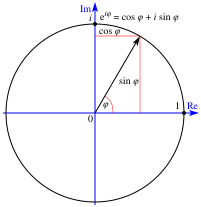
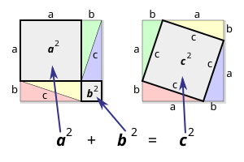

The abstract science of number, quantity, and space — the language in which the universe is written
Called "the most beautiful equation in mathematics." Connects five fundamental constants: e (natural base), i (imaginary unit), π (pi), 1, and 0.
For a right triangle, the square of the hypotenuse equals the sum of squares of the other two sides. Known for 4,000 years; over 370 different proofs exist.
Links differentiation and integration. The area under a curve equals the antiderivative evaluated at the bounds. Discovered independently by Newton and Leibniz.
Updates probability of a hypothesis given new evidence. Foundation of Bayesian statistics, machine learning, spam filters, and medical testing.
For any convex polyhedron: vertices minus edges plus faces equals 2. A cube: 8−12+6=2. Foundation of topology.
Decomposes any function into constituent frequencies. Powers signal processing, JPEG compression, MP3 audio, MRI imaging, and quantum mechanics.


| Problem | Status | Prize |
|---|---|---|
| Riemann Hypothesis | Unsolved | $1M |
| P vs NP | Unsolved | $1M |
| Navier–Stokes Equations | Unsolved | $1M |
| Yang–Mills Theory | Unsolved | $1M |
| Birch–Swinnerton-Dyer | Unsolved | $1M |
| Hodge Conjecture | Unsolved | $1M |
| Poincaré Conjecture | Solved by Perelman (2003) | $1M (declined) |
Algebra generalizes arithmetic using symbols for unknown quantities. Founded by al-Khwarizmi (820 CE), who named it al-jabr.
The discriminant b²−4ac tells you: >0 two real roots; =0 one root; <0 two complex roots.
Expressions of the form aₙxⁿ + aₙ₋₁xⁿ⁻¹ + … + a₀.
Fundamental Theorem of Algebra: Every non-constant polynomial of degree n has exactly n roots in the complex numbers (counting multiplicity).
Vectors, matrices, and linear transformations. Foundational for computer graphics, machine learning, quantum mechanics, and data science.
Determinant: det(A) = 0 iff A is singular (non-invertible).
SVD (Singular Value Decomposition): A = UΣVᵀ — decomposes any matrix. Powers PCA, compression, recommendation systems.
Studies algebraic structures: groups, rings, fields.
Group: Set + operation satisfying closure, associativity, identity, inverse. (Integers under addition form a group.)
Ring: Group + second operation (like multiplication). (Integers form a ring.)
Field: Ring where all nonzero elements have multiplicative inverses. (Real numbers form a field.)
Key identities: log(xy) = log(x)+log(y), log(xⁿ) = n·log(x), eˡⁿˣ = x.
Compound interest: A = P·e^(rt). Population growth: P(t) = P₀·e^(rt).
Argand plane: real axis horizontal, imaginary vertical. Polar form: z = r·e^(iθ) = r(cosθ + i·sinθ).
De Moivre's: (cos θ + i sin θ)ⁿ = cos(nθ) + i sin(nθ).
The value a function approaches as x approaches a. Foundation of all calculus. L'Hôpital's rule handles 0/0 and ∞/∞ indeterminate forms:
Power rule: d/dx(xⁿ) = nxⁿ⁻¹
Product rule: (uv)' = u'v + uv'
Chain rule: d/dx[f(g(x))] = f'(g(x))·g'(x)
Common derivatives: d/dx(eˣ) = eˣ, d/dx(ln x) = 1/x, d/dx(sin x) = cos x, d/dx(cos x) = −sin x
Power rule: ∫xⁿdx = xⁿ⁺¹/(n+1) + C
Common integrals: ∫eˣdx = eˣ, ∫(1/x)dx = ln|x|, ∫sin x dx = −cos x
Techniques: Substitution (u-sub), integration by parts (∫udv = uv − ∫vdu), partial fractions.
Used in optimization (gradient descent in ML), fluid dynamics, electromagnetism (Maxwell's equations in vector form).
ODE (ordinary): one independent variable. PDE (partial): multiple variables. Model everything from epidemics to heat flow to quantum states.
eˣ = 1 + x + x²/2! + x³/3! + …
sin x = x − x³/3! + x⁵/5! − …
Fourier series represents periodic functions as sums of sines and cosines — key to signal processing, acoustics, and image compression.
Based on Euclid's 5 postulates (Elements, 300 BCE). The parallel postulate: through a point not on a line, exactly one parallel line exists.
Angles in a triangle sum to 180°. The Pythagorean theorem. Circle: circumference = 2πr, area = πr².
Spherical (elliptic): Parallel lines eventually meet (like longitude lines). Triangle angles > 180°. Geometry on Earth's surface.
Hyperbolic: Multiple parallels through a point. Triangle angles < 180°. Describes saddle-shaped surfaces and spacetime near black holes.
Einstein's general relativity uses Riemannian geometry — curved spacetime.
| θ | sin | cos | tan |
|---|---|---|---|
| 0° | 0 | 1 | 0 |
| 30° | 1/2 | √3/2 | 1/√3 |
| 45° | √2/2 | √2/2 | 1 |
| 60° | √3/2 | 1/2 | √3 |
| 90° | 1 | 0 | ∞ |
The study of properties preserved under continuous deformations (stretching, bending — but not tearing). "Rubber sheet geometry."
A coffee mug and a donut are topologically equivalent (both have one hole). A sphere and a cube are equivalent. The Möbius strip has only one surface.
Euler characteristic χ = V − E + F = 2 − 2g (g = number of holes/handles).
Self-similar structures with fractional dimension. Mandelbrot set: z_{n+1} = z_n² + c.
Sierpinski triangle: dimension ≈ 1.585. Koch snowflake: infinite perimeter, finite area.
Fractals describe coastlines, ferns, snowflakes, lightning bolts, and blood vessel branching in nature.
Line: y = mx + b. Circle: (x−h)² + (y−k)² = r². Ellipse: x²/a² + y²/b² = 1.
A prime is divisible only by 1 and itself. There are infinitely many primes (Euclid, 300 BCE).
First 20 primes: 2, 3, 5, 7, 11, 13, 17, 19, 23, 29, 31, 37, 41, 43, 47, 53, 59, 61, 67, 71
Largest known prime (2024): 2^136,279,841 − 1 (Mersenne prime, 41 million digits).
Clock arithmetic: 17 ≡ 5 (mod 12). Foundation of RSA encryption, hash functions, and checksums.
Fermat's Little Theorem: If p is prime and gcd(a,p)=1, then aᵖ⁻¹ ≡ 1 (mod p). Used in primality testing and RSA.
F(n) = F(n−1) + F(n−2); F(n)/F(n−1) → φ as n→∞.
Appears in plant spirals (sunflower seeds, pinecones), shell growth, financial markets, and art. φ satisfies x² = x + 1, so φ² = φ + 1.
Cantor showed not all infinities are equal. Countably infinite: integers, rationals. Uncountably infinite: real numbers, irrational numbers.
Cantor's diagonal argument proves |ℝ| > |ℕ|. There are infinitely many sizes of infinity (ℵ₀, ℵ₁, …).
Hilbert's Hotel: a hotel with infinitely many rooms can always accommodate more guests — even infinitely many more.
RSA encryption rests on the difficulty of factoring large semiprimes (products of two large primes).
Diffie-Hellman: Uses discrete logarithm problem. Elliptic curve crypto: Uses group structure of points on y² = x³ + ax + b — more efficient than RSA.
The 68-95-99.7 rule: in a normal distribution, 68% of data lies within 1σ, 95% within 2σ, 99.7% within 3σ of the mean.
Independent events: P(A∩B) = P(A)·P(B).
Law of Total Probability: P(A) = Σ P(A|Bᵢ)·P(Bᵢ).
| Distribution | Use |
|---|---|
| Normal (Gaussian) | Heights, errors, CLT limit |
| Binomial | Number of successes in n trials |
| Poisson | Events per unit time/area |
| Exponential | Time between events |
| Chi-squared | Goodness of fit tests |
| Student's t | Small samples, unknown σ |
H₀ (null hypothesis) vs H₁ (alternative). Reject H₀ if p-value < α (significance level, typically 0.05).
p-value: probability of observing data this extreme if H₀ were true. NOT the probability H₀ is true.
Type I error (α): reject true H₀. Type II error (β): fail to reject false H₀. Power = 1 − β.
OLS minimizes Σ(yᵢ − ŷᵢ)². β₁ = Σ(x−x̄)(y−ȳ) / Σ(x−x̄)².
R² (coefficient of determination): proportion of variance explained. R²=1 is perfect fit; R²=0 means the model explains nothing.
The CLT is arguably the most important theorem in statistics: regardless of the population distribution, sample means approach a normal distribution as n increases. This is why the normal distribution appears everywhere and justifies most parametric tests.